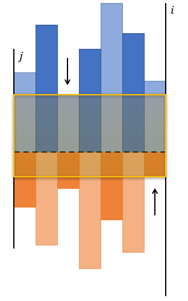

T1 菱形
题解
首先特判掉$b=0,c=0$的情况。
如果$b<c$，那么我们可以将矩形沿$y=x$镜像翻转，同时也翻转起点、终点的坐标，从而转化为$b\geq c$的情况。
如果起点不在$2,3$，或者终点不在$1,0$，那么我们可以枚举第一步、最后一步是怎么走的，从而强制让起点在$2,3$，终点在$1,0$。
如果$b=c$，可以枚举最后一步是怎么走的，从而转化为$b\neq c$的情况。
接下来以$a=2,d=1$为例。
可以发现，拐一次角经过的路径长度为$3$，而直行经过的路径长度为$4$，因此，我们应该让拐角的次数尽量多。
由于起点在$2$，终点在$1$，我们可以认为，第一步之前的方向为横向，最后一步之后的方向为纵向。

即，如果第一步是向上走的，我们认为这也是一个拐角；如果最后一步是向右走的，我们认为这是一个拐角。我们的目的是让拐角个数尽量多。
由于我们强制让$b>c$，因此拐角的个数是确定的，接下来我们只需要将剩余的向右走的情况塞到这条路径中。
显然除了开头结尾外，每个拐角之后都可以塞任意多条向右走的路径，因此这实际上对应着将$n$个球塞入$m$个盒子的方案数，盒子可空，方案数为$n+m-1\choose m-1$。
同时，每塞入一条向右走的边，方案数就会$\times 2$，因为直行的时候可以选择菱形的上半部分走过去，也可以选择下半部分。
代码如下
1 |
|
T2 正方形
题解
由于$n\times m\leq 4\times 10^6$，且$n\geq m$，这意味着$m\leq 2\times 10^3$，同时$q$非常小。
我们将$n$这一维称为行，将$m$这一维称为列。
考虑对行建一棵线段树，线段树上每个节点开一个长度为$m$的数组，第$i$个位置维护仅考虑这个节点对应的行，以第$i$列作为右边界的最大正方形边长。
同时，我们对每个节点还要开两个长度为$m$的数组up,down。如果当前节点对应$[l,r]$，那么up[i]表示从$(l,i)$开始，仅考虑第$i$列，向上最多有多少个连续的$1$；down[i]表示，从$(r,i)$开始，仅考虑第$i$列，向下最多有多少个连续的$1$。
up和down很好维护，重点在于如何求以每一列作为有边界的、跨过区间中点的最大正方形。
我们从小到大依次考虑每一列

$i$是当前枚举的右端点，$j$是当右端点取$i-1$时，最大正方形的左边界。蓝色的条代表当前节点右儿子的up，橙色的条代表当前节点左儿子的down。
我们先考虑如何求$i,j$之间的最大矩形。
显然，这个矩形的上边界不能高于$i,j$间up的最小值，矩形的下边界不能低于$i,j$间down的最小值。
$i,j$之间up,down的最小值可以使用单调队列维护，接下来我们尝试将$j$往右移动，直到$i,j$间矩形的高度大于等于$j-i+1$。此时以$i$为有边界的最大正方形边长为$i-j+1$。
由于$i,j$只会单调移动，因此一次pushup的复杂度为$O(m)$。
查询的时候，可以用类似pushup的方法合并两次子询问得到的结果，总时间复杂度为$O(mq\log n)$。
代码如下
1 |
|
T3 最小生成树
题解
设$f_{i,j,k}$表示仅考虑了边权$\leq i$的边，连通了$j$个点，且最小生成树边权和为$k$的概率。
转移的时候枚举仅考虑$\leq i-1$的边时，$1$号节点所在的连通块。我们强制让这个连通块向外连出的边的边权$\geq i$，特别地，我们认为断开的边的边权为$\infty$，同时，我们将这些边权$\geq i$的边的边权都视为$i$。我们将转移之后得到的结果称为$g_{i,j,k}$。
可以得到如下转移：
其中，$p_i$表示随机到$\geq i$的边权的概率。
接下来我们容斥掉不合法的情况，即使用了边权$> i$的边的情况。
同样，枚举仅考虑$\leq i$的边时，$1$号节点所在的连通块，可以得到如下转移
最终的答案就是$f_{k,n,\cdots}$
代码如下
1 |
|